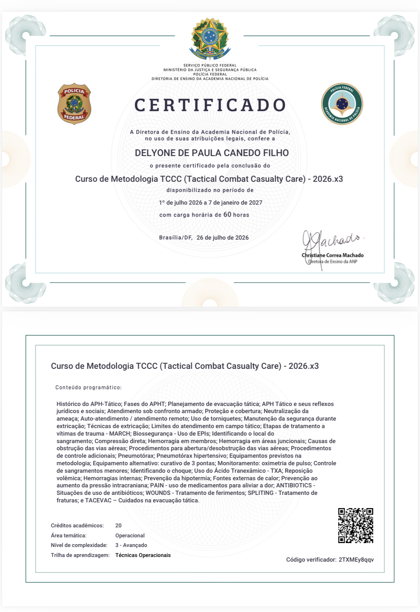
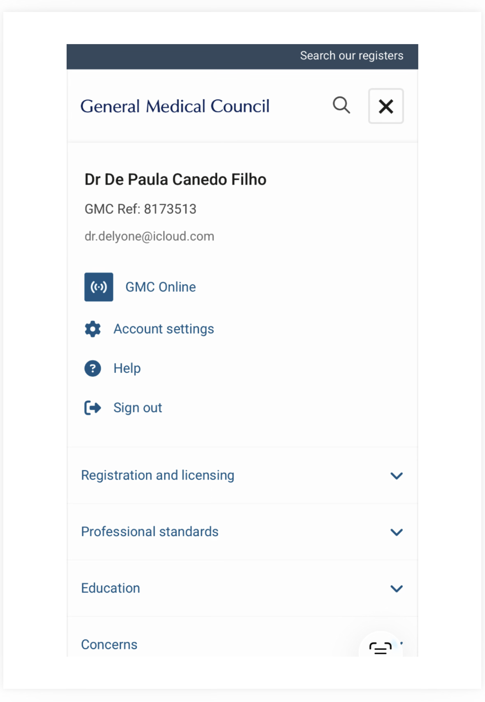
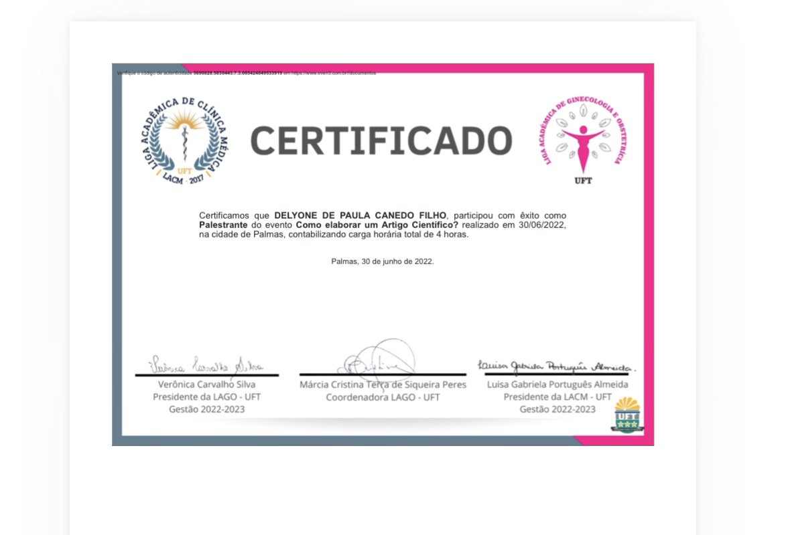
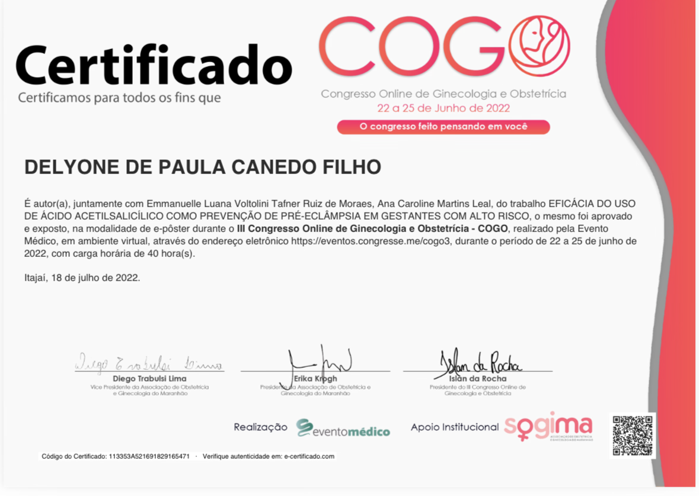
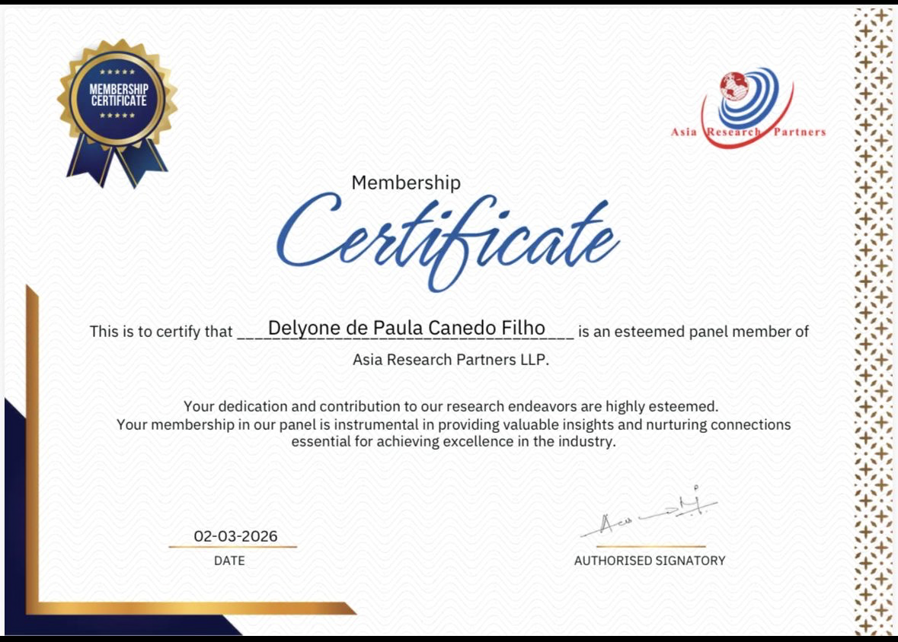
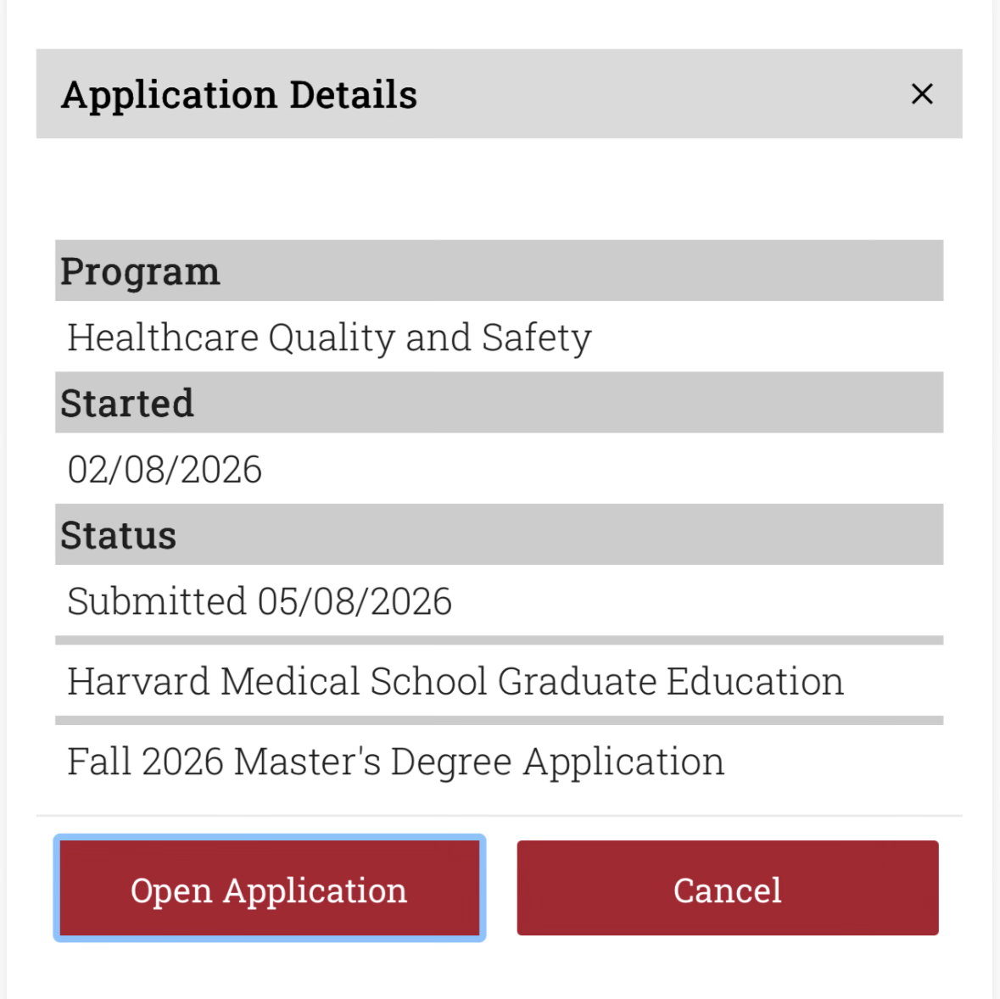
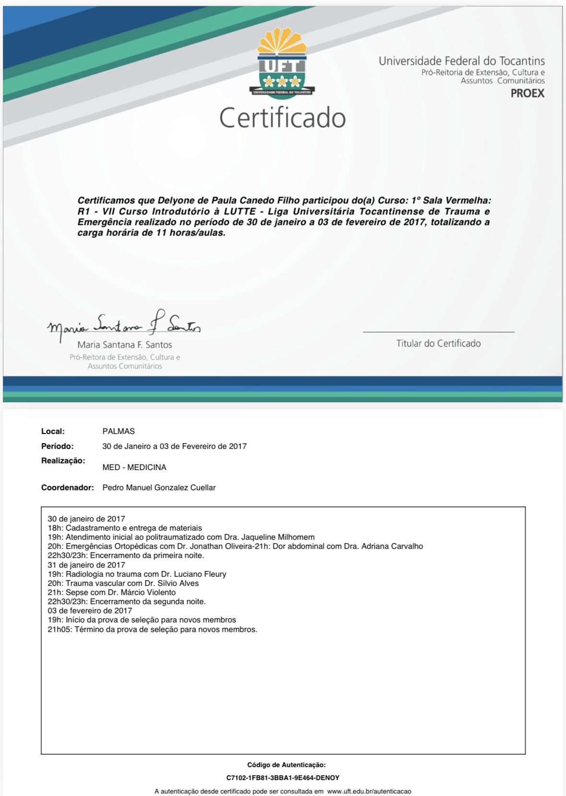
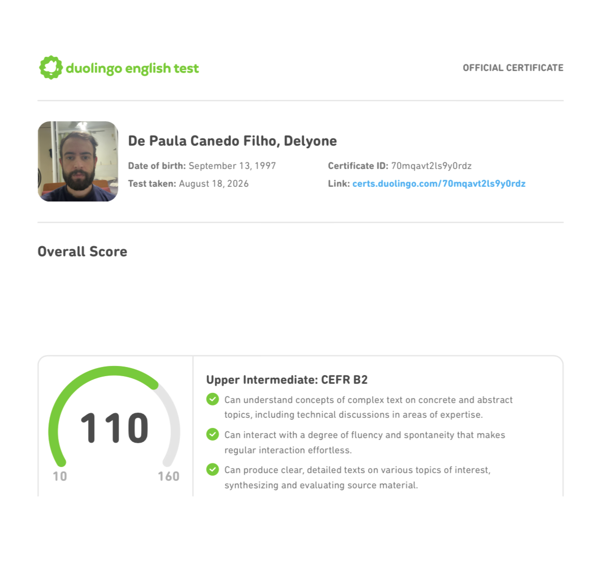
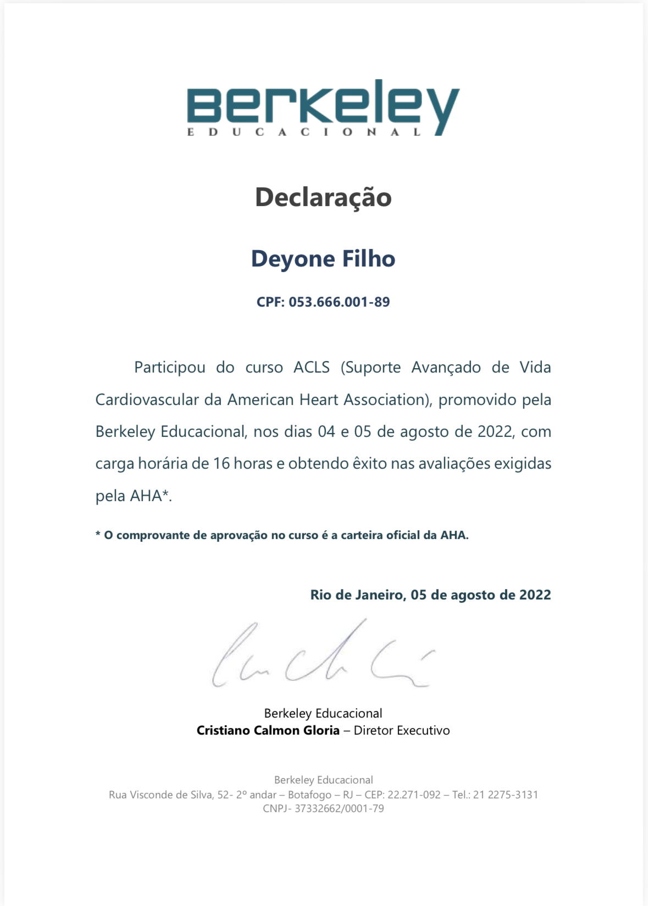

ECFMG · Credential verification
Documento de verificação de credenciais presente no acervo.
Abrir PDF →Documentos e registros visuais que integram o acervo do fundador. A apresentação organiza o material, mas os arquivos originais permanecem disponíveis.
Documento de verificação de credenciais presente no acervo.
Abrir PDF →Certificação ACLS presente no acervo.
Abrir PDF →Documento de diploma armazenado no arquivo de certificados.
Abrir PDF →








Os registros visuais são mantidos como parte do acervo original. Novos certificados podem ser acrescentados à mesma pasta sem alterar a arquitetura da página.